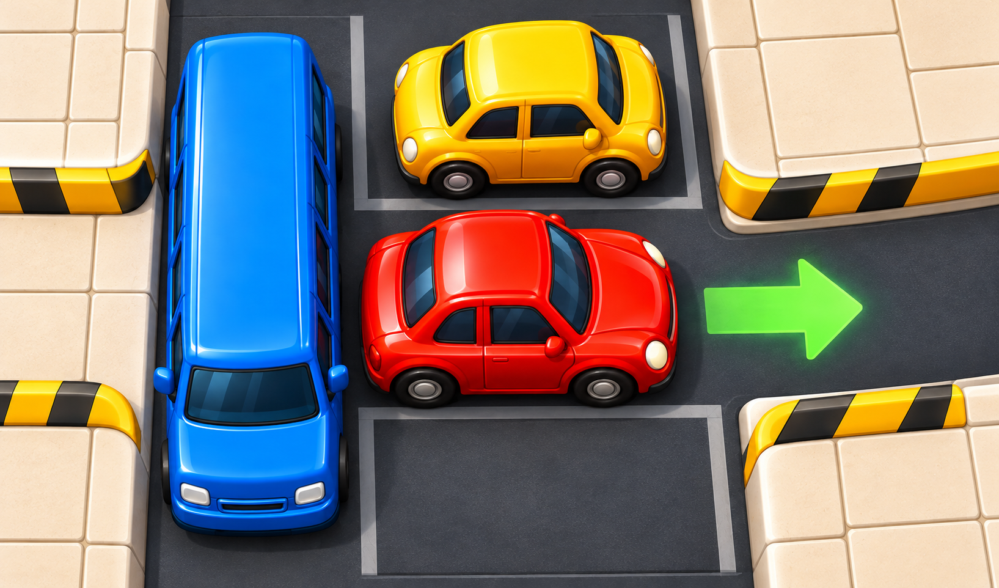

Traffic Untie
Раздвигайте машины на парковке и освобождайте путь к выезду.

Об игре
Traffic Untie — головоломка о тесной парковке. Среди машин находится целевой автомобиль, которому нужно добраться до выезда справа. Освободите его полосу: перемещайте мешающий транспорт и находите последовательность ходов, которая откроет дорогу.
Каждая машина движется вдоль своего положения: горизонтальная — влево и вправо, вертикальная — вверх и вниз. Через соседний автомобиль проехать нельзя, а свободное место ограничено краями парковки. Иногда сначала нужно отодвинуть одну машину, чтобы появилась возможность переместить другую.
Перетаскивайте автомобили по свободным клеткам. Когда полоса расчистится, направьте целевую машину к выходу. Уровень завершается её выездом: освобождать всю парковку не требуется.
Как играть
- 1.
- Найдите целевую машину и выезд справа от неё.
- 2.
- Перетаскивайте мешающие машины вдоль их ряда или столбца.
- 3.
- Расчистите всю полосу от передней части целевой машины до выезда.
- 4.
- Перетащите целевую машину наружу либо нажмите на неё, когда путь свободен.